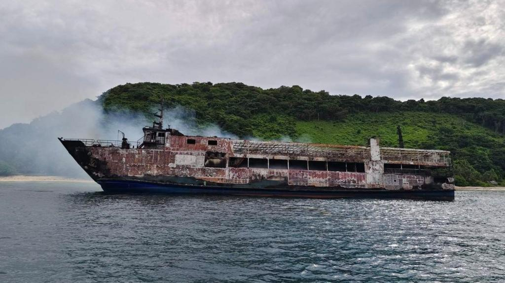

Five dead and 86 missing as 'heartbreaking' fire breaks out on Philippines ferry
2026, September 10

Five dead and 86 missing as 'heartbreaking' fire breaks out on Philippines ferry
2026, September 10
Philippines
This is a major maritime disaster unfolding today, 10 September 2026, off Palawan in the Philippines.🚢 What happened?
The MV June Aster, a 53-metre passenger-and-cargo ferry, was travelling from Manila to Coron, a popular tourist and diving destination, when it caught fire on Wednesday evening, around 6:45pm local time.
According to the latest reports:
134 people were officially listed aboard:
117 passengers
17 crew
5 people have died
43 people have been rescued
86 people remain missing
The numbers are still provisional as the search continues.
🔥 How did the fire start?
This is still unknown.
One survivor reportedly told the Philippine Coast Guard that there was a loud explosion in the cargo hold, followed almost immediately by smoke and rapidly spreading flames.
The ferry was carrying vehicles and cargo, including five motorcycles, an electric vehicle, a forklift and a pickup truck, so investigators will need to establish exactly what was in the cargo area and what caused the initial explosion.
Importantly, authorities have not established that the explosion was deliberate. The possibility of sabotage or terrorism has reportedly been raised, but officials say it is far too early to draw conclusions.
🌊 Why is the rescue so difficult?
The ferry remained afloat but was listing and heavily damaged, with thick smoke and extreme heat preventing rescuers from safely boarding it. Strong currents and bad weather have also made the operation considerably more difficult.
The ship initially sent its distress signal about 7.4 km from the village of Turda, but currents subsequently pushed it to roughly 14.2 km offshore.
Coast Guard and military vessels, aircraft, local fishermen and even private resort operators are participating in the search.
Some survivors reportedly jumped into the sea, and rescuers found some people without life jackets.
🇵🇭 Why this is particularly concerning
Ferries are an essential part of life in the Philippines because the country consists of thousands of islands. Unfortunately, the country has experienced a number of serious maritime disasters.
The most notorious was the 1987 Doña Paz disaster, when a passenger ferry collided with an oil tanker. More than 4,300 people died, making it the world's deadliest peacetime maritime disaster.
There was also another serious ferry disaster earlier this year: the MV Trisha Kerstin 3 sank in January, killing dozens of people.
One interesting point in the current case is that the Coast Guard says MV June Aster had passed its safety inspections. That will make the eventual investigation particularly important: investigators will need to determine whether the fire resulted from cargo, a mechanical/electrical failure, human error, or another cause.
The most heartbreaking aspect right now is that 86 people are still unaccounted for, and rescue teams haven't yet been able to fully search the burned vessel. The situation could therefore change substantially as the search progresses.